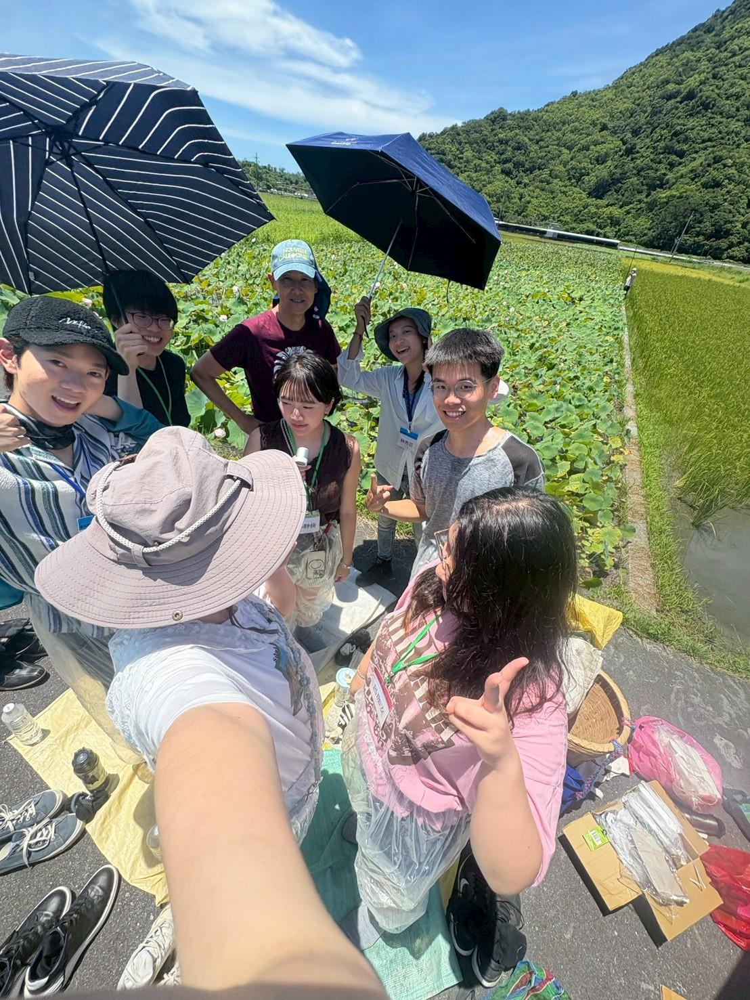
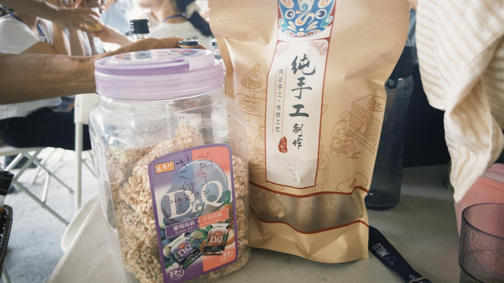
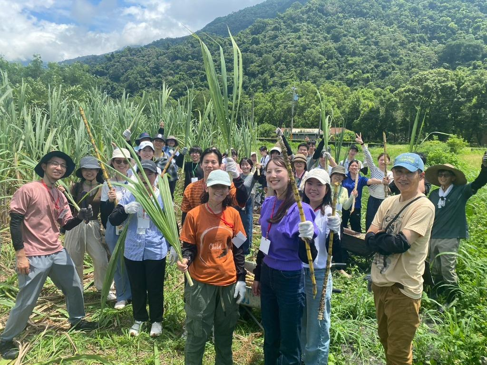
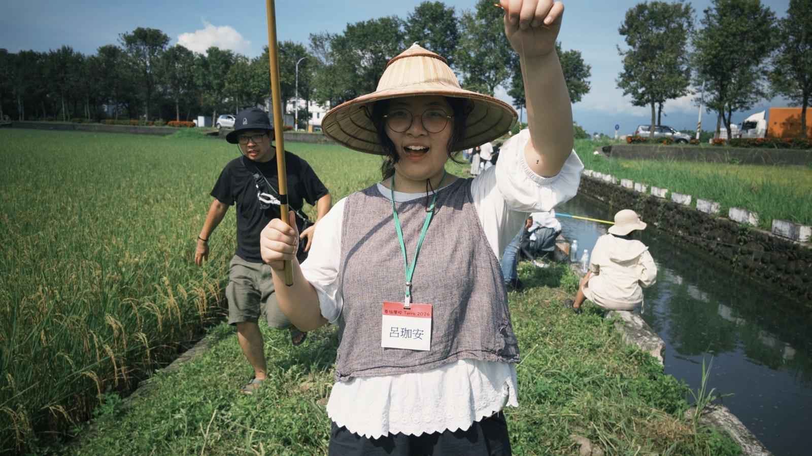

「Terra（テラ）」とはラテン語で「地球」を意味します。
AIが学びや働き方を急速に変える時代において、私たちは信じています。本当に理解するためには、自ら世界へ踏み出して得なければならない知識があるということを。
テラ学校は、壁のない学校です。私たちは人々を土地へと連れ戻し、現場へと連れ出し、リアルな体感と探索の中で、地球を再認識し、自分だけの答えを見つける手助けをします。



UPCOMING PROGRAM

📅 開催日程：2027 年 1 月 3 日 〜 1 月 7 日 (4泊5日)
📍 開催場所：花蓮天祥 ╳ 観雲山荘
🌲 コース概要：人々を大自然へと誘い、高山生態系と環境を探求します。野生での体験を通じて歩みを緩め、リアルな世界を知り、持続可能な高山観光と自然環境保護が共存する実用的なソリューションを仲間と共に共創します。
PAST PORTFOLIO
農村と田野を舞台に、国立清華大学立徳計画と早稲田大学による共同プロジェクト。人々は農作業を通じて自然を直接体験し、瞑想の中で自己を内省し、デザイン思考を活用して地方生産者や食農普及のための4つの心温まる解決策を共創しました。
PARTNERSHIP NETWORK
産学官各界の資源を融合し、テラ学校の持続可能な教育プログラムを共同で推進します。